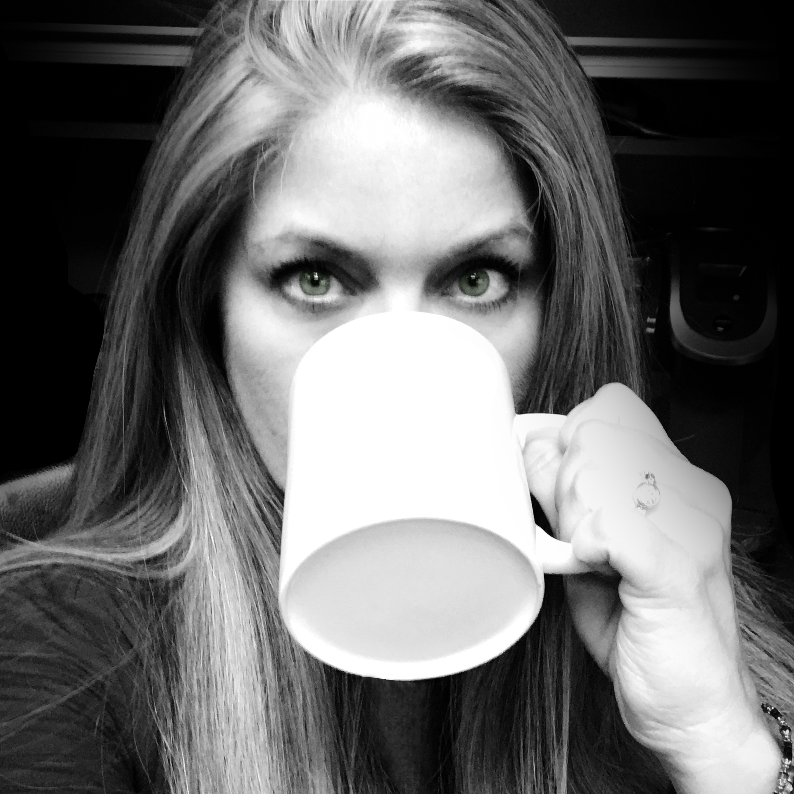

About Me
My day begins with coffee. Every day, one 10 oz. cup of coffee at my kitchen counter while I check my emails and read the headlines. I can’t remember a time when I didn’t start my day this way. Of course, I wasn’t always checking emails and headlines on my iPad. It used to be newspapers and magazines spread across the counter while I drank my coffee. I suppose the coffee has changed too. I drink it stronger now and without sugar. But the routine has always been the same, coffee first then prepare for the day.
Over the past 25 years I have worked as a Creative Director, Graphic Deisgner, Web Developer, Assitant Art Director, Freelance Graphic Artist and currently, an Art Director. My focus has always been in digital design and visual communication. Online media quickly became my favorite area of design, but the technology progresses so fast I've found it difficult to keep up.
The UCI Coding Boot Camp was a godsend for me. Learning to code has reinvigorated my desire to design and develop for the web as well as introducing me to so many other possibilities.
In a sense I've had to reinvent myself. Once my favorite media was oil paints, then it was digital design. Now I design with code, script and logic. It's all new and exciting and I can't wait to see what kind of things I can do with with my newfound talents.
But first, coffee.